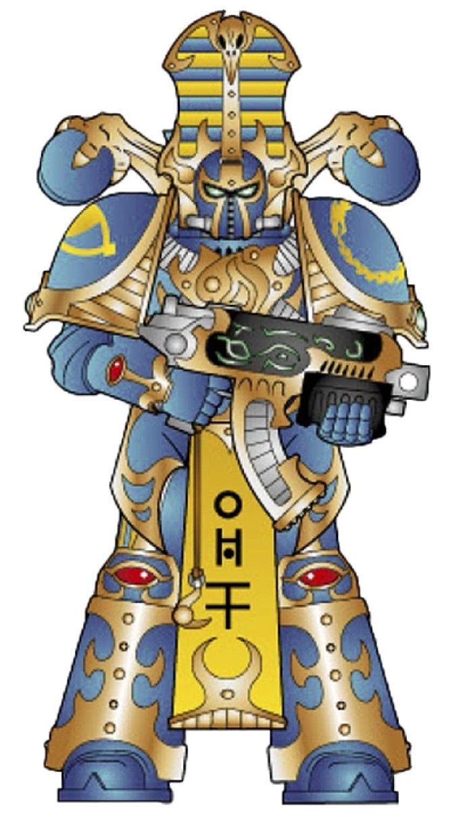

Thousand Sons
| Thousand Sons XV Legion · the Sons of Magnus · the Rubricae | |
|---|---|
Icon of the Thousand Sons: the burning serpent that devours its own tail Artwork © Games Workshop | |
| Founding | First Founding, c. 700.M30[a], in the late Unification Wars |
| Legion number | XV |
| Primarch | Magnus the Red (found 840.M30), now Daemon Primarch of Tzeentch |
| Present leaders | Magnus; the nine Magisters Templi; Ahzek Ahriman and his Cabal (exiled) |
| Homeworld | Prospero (destroyed 004.M31); now Sortiarius, the Planet of the Sorcerers |
| Fortress | The Tower of the Cyclops, Sortiarius, Eye of Terror |
| Allegiance | Loyalist (until 004.M31); Traitor, Chaos (Tzeentch) |
| Colours | Ochre (before Prospero); crimson (Prospero); blue and gold (since the Rubric) |
| Size | About 80,000 to 90,000 before the Heresy; now a few thousand Rubricae and a larger number of Sorcerers, thralls and cultists |
| Organisation | Before: nine Fellowships, circles and chantries. After: nine Cults, sects and thrallbands |
| Notable battles | |
| Aghoru; Heliosa; Council of Nikaea; Fall of Prospero; Battle of Luna; Siege of Fenris; invasion of the Stygius Sector; the Fall of Cadia | |
| Notable members | |
| Magnus the Red, Ahzek Ahriman, Amon, Kallimakus, Ohrmuzd Ahriman, Hathor Maat, Khalophis, Iskandar Khayon, Hasophet | |
The Thousand Sons, the XV Legion of the Space Marine Legions, are the warrior-sorcerers raised from the gene-seed of Magnus the Red. In the Great Crusade they were the Legion of the library and the seer, the only one of the twenty to make the study of the Warp its first duty. Their primarch's trespass in the last years of the war, the destruction of their homeworld, Prospero, by the Space Wolves and the pact that saved them from it made them servants of Tzeentch, the Changer of Ways. They joined the Traitors of the Horus Heresy and since its end have lived in the Eye of Terror, where the surviving warriors of the Legion are for the most part bound inside their armour as the Rubricae, spirits without flesh, and the Legion's authority passes to the sorcerers who cast the spell that made them so.[1]
The Thousand Sons are held to be the most intelligent and the most dangerous of the Traitor Legions. They do not raid for plunder, as the Black Legion does, or for slaves or souls. They campaign in order to take books, relics, bloodlines and moments in time, and their ends are generally the ends of Tzeentch, which are a matter of argument among the savants of the Ordo Malleus. In the Era Indomitus, with the opening of the Great Rift and the return of Magnus to the material universe, they have fought in a series of campaigns that included the invasion of Fenris, the battle for the Moon of Terra and the occupation of the Stygius Sector. The Inquisition rates them among the three most dangerous of the Traitor Legions.[2]
History
[edit]Creation of the Legion
[edit]The XV Legion was raised on Terra and its first warriors were taken from the subject families of the old Achaemenid realm, whose scholars and seers the Emperor of Mankind had judged suitable for the gene-laboratories beneath the Himalazian mountains. Its gene-seed came from Magnus, and the first Legionaries were chosen for their psychic aptitude, which the Emperor regarded as the necessary condition for a body able to carry the gift of the primarch. They were put through the same early campaigns as their brothers, in the last pockets of resistance on Terra, and were then given a fleet of their own. One of the first student-aspirants to be accepted was Ahzek Ahriman, with his twin brother Ohrmuzd.[3]
The Legion was flawed from the first. Magnus's gene-seed was unstable and its psychic gift carried with it a condition called the Flesh Change, in which a Legionary's body began to alter without control, ending either in monstrous growth or in the mindless dissolution of a Chaos spawn. Imperial records show that the Legion was far under strength at the end of its first campaigns, and its name, the Thousand Sons, is held to refer to the number of its warriors that remained sound when the primarch was found. For some decades the Legion's very survival was uncertain, and some of the Emperor's advisers urged its disbandment.[3]
Prospero
[edit]
When the Legion was reunited with its primarch on Prospero in 840.M30, Magnus took it in hand. He had spent his youth on a world that was the refuge of the Imperium's early psykers, and he had built there a great pyramid library and a city, Tizca, where the arts of the mind were taught as a civil science. He asked the Emperor for time to cure the Flesh Change and, after years of labour, succeeded in halting it. The Thousand Sons were then accepted into the Great Crusade, after a delay of about a century, as the Twenty-eighth Expeditionary Fleet, and the Legion recruited heavily on Prospero. By the time of the Heresy it had swelled to perhaps eighty or ninety thousand, well below the strength of the greater Legions but sufficient for its needs.[3][1]
The cure was a gift of the Warp, and it was not free. Magnus had bargained with a power he did not understand. The Imperial Truth held that the Warp was a hazard and not a resource, and the Council of Nikaea, a few decades later, ruled that its use was to cease. The question of whether Magnus was ever deceived or whether he knowingly accepted a risk is left open in the Imperial record.[1]
The Great Crusade
[edit]The Thousand Sons fought in the Great Crusade as a Legion of detachments. Their sorcerers, who led squads on the strength of psychic promise rather than seniority of rank, commanded independently, and Magnus encouraged them to be bold. Imperial accounts record that they achieved many compliances without bloodshed, by seeing an enemy's decision before he made it, or by appearing at the hour at which an enemy's will gave way. The Legion's Corvidae cult, whose members read the currents of the future, found the way for others as well as for themselves.[4]
On Aghoru, in the compliance catalogued as 28-16 in about 999.M30,[a] the Legion found a planet whose people spoke of a race of elder beings, the Elohim, and of corrupt powers imprisoned in an artificial mountain. Magnus was enthralled by the mountain, which he recognised as a gateway to some network of conduits between worlds, and his exploration of it released daemons that took the great Titan guardians of the peak. They were beaten by the Thousand Sons with the help of a Space Wolf force from the nearby Ark Reach Cluster, and the Legion marched on to join the Wolves' campaign there.[1]
The Ark Reach campaign of about 001.M31[a] was marked by quarrels between the two Legions. At Heliosa the Thousand Sons were shocked at the Space Wolves' conduct against the Avenian population, and a Prosperine sorcerer of the Pavoni cult, Hastur, suffered the Flesh Change in battle, which caused a panic. Leman Russ and Magnus were on the point of fighting. Their brother Lorgar intervened, and war between the Legions was averted for the time. Russ swore a reckoning, and the oath, in the Space Wolves' memory, outlasted the Great Crusade.[1]
The Council of Nikaea
[edit]After Ullanor, in 001.M31, the Emperor convened the primarchs at Nikaea to rule on the use of psychic power in the Legions. Magnus spoke for the sorcerer's art with great force, and Mortarion spoke against it. The Emperor ruled that the Librarius of each Legion should be disbanded and that psychic power was not to be used in war. The Thousand Sons were the Legion the decision hit hardest, for the edict ended the thing they had been built to do. It is recorded that Magnus obeyed in form and not in spirit, and that the Legion's sorcerers continued their study in secret in the pyramid library.[3]
The Fall of Prospero
[edit]
The events of 004.M31 are told in the article on Magnus. In summary: the primarch's attempt to warn the Emperor of Horus's rebellion broke the wards of the Imperial Palace and was understood as an act of treason. The Space Wolves were sent to Prospero, their orders were altered in transit by Horus, and Magnus, knowing that he had been used, chose not to resist. While he veiled the planet in a spell and sent his fleet away, Ahriman, as Chief Librarian and First Captain of the Fellowships, held the Legion in the field against the Wolves. Tizca burned, the library was lost, and Russ broke Magnus before the last of his warriors. Magnus's soul was saved by Tzeentch, who removed the Legion, the surviving sorcerers and a fragment of the city to the Eye of Terror, where it became the Planet of the Sorcerers.[1][5]
Imperial historians have long asked how many of the Legion died on Prospero. The Space Wolves' own records say almost all. The better supported view is that the greater part of the Thousand Sons were absent on campaign, and that those who were taken by Tzeentch to the Eye of Terror were the survivors of Prospero together with those who rallied to the primarch in the following years. The Legion that went to Terra with Horus was a small fraction of the host that had marched at Ullanor.[1]
The Siege of Terra
[edit]The Thousand Sons went to Terra with Horus, and a part of the Legion, together with sorcerers from the Warmaster's own host, was present at the walls. The Imperial Fists' accounts describe warrior-sorcerers who moved apart from the fighting, working their own rites in the ruins of the outer works. The Legion's own accounts, as they are recovered, give their purpose as the recovery of a fragment of Magnus, the Shard of Terra, which was held in the Palace dungeons. It was not recovered. The Thousand Sons withdrew with the other Traitors when Horus fell in 014.M31 and the Great Scouring began.[5]
The Rubric of Ahriman
[edit]
In the years that followed, the Flesh Change returned to the Legion, as the gift of Tzeentch, who is the lord of change in all forms. The Legion's sorcerers watched as comrade after comrade went down into mutation and became a Chaos spawn. Ahzek Ahriman, who had held the Fellowships against the Space Wolves and who had watched his own twin brother, Ohrmuzd, dissolve into a thing that could not speak, undertook to find a cure. He worked for decades, and his reputation among his brothers did not sit well with the Legion's other leaders, who feared that any answer would cost more than the disease.[6]
The answer was the Rubric, cast in M31 in the decades after the Heresy.[a] It was a spell, cast by a Cabal of the Legion's sorcerers, that halted the Flesh Change in every member of the Legion at once by sealing the body of a warrior into his armour. Legionaries without psychic gift were turned to dust within their plate. Those with a gift were greatly strengthened, and the survivors became sorcerers of the first rank. The dust of the dead, held in their armour by a spirit that has no body to defend, became the Rubricae, soldiers who obey the commands of a sorcerer and who do not tire, do not speak and cannot be reasoned with. Magnus, who felt the death of most of his Legion in an instant, fell upon the Cabal in fury. He defeated Ahriman and was about to destroy him when Tzeentch interposed and spoke, in the account the Legion keeps, the words "You destroy my pawns too easily." Ahriman and his fellow sorcerers were exiled from Sortiarius and were commanded to wander the galaxy.[6]
The Age of Secrecy
[edit]For ten thousand years the Thousand Sons raided for lore and took the minds of the Imperium's psykers, and Ahriman travelled with his Cabal in search of a cure for the Rubric. He raided the Imperium's repositories of arcane knowledge. He sought, for several decades, the Black Library of the Aeldari, a store of their knowledge of the Warp. During the 13th Black Crusade he used a captured Inquisitor to enter the Webway in search of the Library, and came out of it with a transcript of the Tome Labyrinthus, a guide to the paths of the Webway that gave him the means to open portals on worlds across the Imperium, among them the cairn-gates of Fenris. Imperial savants hold that this made him useful to Magnus once more, though the two are not known to have spoken.[6][2]
The Era Indomitus
[edit]In 999.M41, when Abaddon the Despoiler called the Traitor Legions to the 13th Black Crusade, Magnus himself refused. Ahriman saw a use for the war, and sent thrallbands to the ice moon of Klaisus in the Cadia System, where Tzeentch's plans converged. After the Fall of Cadia he led a contingent of the Legion into the Webway to ambush the Ynnari, and was bested in a negotiation with their prophet, who restored a dozen of his Rubricae to life for the space of a conversation, and showed him what he might hope for.[2]
The Imperial Regent, Roboute Guilliman, was awakened in the same year. Magnus, reading the strands of fate, waited at the edge of the Maelstrom for the Terran Crusade. His fleet destroyed part of Guilliman's and drew the rest into the Warp storm. It was no part of his design that Guilliman should die, only that he should not take the path he intended. The two primarchs met on Luna, where Magnus's Rubricae and Scarab Occult Terminators opened the engagement, and Guilliman, with the assistance of a Harlequin Shadowseer, undid the wards on the Webway portal and left Magnus beaten on the field. Imperial scholars regard this as the first occasion on which a Daemon Primarch was defeated in single combat in the material universe in ten thousand years.[2]
The Great Rift was born in the same year. The energies released by the passage of the Planet of the Sorcerers, which Magnus used the sacrifice of the people of Midgardia to translate out of the Eye of Terror to a place above the ruins of Prospero, combined with the storms accompanying the Fall of Cadia, and tore the galaxy across its length. In the Imperial record this is held to be the work of both Magnus and Abaddon, whose aims were not the same but whose acts reinforced each other. The Legion's later campaigns are marked by wider reach. In a later and undated action, the Cult of Manipulation wove a hex that threatened to put out the star of the Aspis system in the Segmentum Solar. Magnus himself led the invasion of the Stygius Sector after the Astronomican failed there, and thereafter began to call to the Imperium's psykers, who suffered after the Great Rift in great numbers, to come to Sortiarius where they would not be persecuted.[2]
Organisation
[edit]Before the Heresy
[edit]Magnus rebuilt the Legion on Prospero as a society of scholars under arms. Its basic fighting unit was the chantry, led by a sergeant, and its company the circle, led by a captain. The largest formation was the Fellowship, nine of which formed the Legion, each of about a thousand warriors. A warrior who was a good psyker, though young, might lead a chantry over an older sergeant, and the Legion's officers were known as thrall-wizards and apprenticed to senior sorcerers. At the top stood the Rehati, an inner council of the Fellowship captains who advised Magnus, and the Legion's Librarius. The Legion's captains were seconded to other Legions for a period of study, a practice that taught them how their brothers fought. Ahriman served for five years with the Word Bearers and Khalophis with the Iron Warriors.[4]
Its elite were the Scarab Occult Terminators, called Sekhmet in the older Imperial records, who wore Tartaros plate in the manner of the oldest Prosperine honour guard. The Legion also fielded a small but fine armoured force and a large number of Legio Auxilia, Prosperine mortals who followed the Legion. Because it campaigned in detachments and seldom as a whole, the Thousand Sons were a Legion whose strength is difficult to gauge from its recorded campaigns.[4]
After the Rubric
[edit]The Legion of Prospero also had its cults, five of them, founded by the Rehati and organised by the psychic art that each member practised best, whatever his Fellowship. The Athanaean were telepaths and served as the Legion's voice. The Corvidae were seers, who read the future, and their Magister Templi was Ahriman. The Pavoni worked on the body, the Pyrae on fire and the Raptora on the movement of matter by will. Each kept a pyramid in Tizca, topped with its icon. What became of these cults after the Rubric is not recorded.[4]
The present Legion is organised into nine Cults, each led by a Magister Templi of the Rehati, with nine lesser sorcerers beneath him. They are the Cults of Change, Duplicity, Knowledge, Magic, Manipulation, Mutation, Prophecy, Scheming and Time, and each is held to pursue the aspect of Tzeentch that gives it its name. The Cult of Magic hunts for arcane relics, the Cult of Manipulation weaves a web of spies and the Cult of Time treats the past and future as a material to be worked. A Cult is seldom deployed whole. Its sects, led by an Exalted Sorcerer, and its thrallbands, each of a sorcerer with a command of Rubricae and a retinue of daemons, hounds and mortal thralls, are scattered through space and time to carry out parts of a larger design that few of their members can see.[6]
The core of a thrallband is its Rubricae, who march in silence in squads under a sorcerer and cast the warpflame of their inferno bolters. Scarab Occult Terminators, the heirs of the Sekhmet, are the Legion's elite. A thrallband may also command Tzaangors, the goat-headed beastmen of Tzeentch, Chaos spawn, Heldrakes and other daemon engines, and a coven of Chaos Sorcerers from the sect. The Exiles under Ahriman form a separate Cabal. Some of the Legion's survivors, who accepted neither the Rubric nor the primarch's authority, are called the Exiled and Estranged and serve under their own masters, and others have deserted to other Legions. Iskandar Khayon, who is at present counted among the Black Legion's sorcerers, is one.[6]
Combat doctrine
[edit]The Thousand Sons fight as a Legion that knows more than its enemy. A thrallband will not as a rule attack until a sorcerer has found the weakness of an enemy by divination, and an engagement may be won before it begins by a ritual conducted on another world. A Legion of this kind needs no great numbers. A Magister Templi might need only a single squad to take a world, and the same Magister might commit his forces to turn a battle that he intends to lose. The Imperial Strategic Archive records that no Imperial commander has yet discovered the true aim of a major Thousand Sons operation before it was complete.[6]
Beliefs
[edit]The Thousand Sons hold that knowledge is the only power that matters, and that the Warp is the only subject worthy of study. Where the Word Bearers believe in the Chaos Gods and worship them, the Thousand Sons believe in the Warp and seek to command it, and Tzeentch is the power that has most to teach them. Imperial Inquisitors note that the Legion's sorcerers are generally cautious, and that they see their devotion to Tzeentch as an arrangement in which each party uses the other. This is the Legion's gravest error, since Tzeentch, who is change, cannot be used by those whom he intends to use.[6]
The loss of Prospero is the Legion's wound. Its sorcerers recall the city of Tizca as a perfect society, and their search for the books that burned in the great library is held to be one of the main drivers of their campaigns. The Thousand Sons hate the Space Wolves with a persistent hatred, and the Emperor with an equal one, because they judge that he killed what he could not understand. Their feelings toward Ahriman are divided between fear of his judgment and resentment of his success.[6]
Homeworld
[edit]Prospero was a world of the Imperium's early psykers, a place of hanging gardens, libraries and spires, whose capital Tizca held the pyramid library at its heart. The Space Wolves bombarded it to a cinder in 004.M31, and the Legion has no homeworld in the material universe. It lives on Sortiarius, a daemon world in the Eye of Terror that carries the city's survivors, a copy of the pyramid and a tower, the Tower of the Cyclops, at the top of which Magnus is held to sit. In 999.M41 the planet was carried out of the Eye of Terror by Magnus's ritual, and it hangs now in orbit above the ruins of Prospero. The Imperium has declared the Prospero system a place of the first danger and forbidden any approach.[2]
Gene-seed
[edit]The gene-seed of the Thousand Sons was unstable from the first, a gift for the Warp joined to a fatal tendency to change. The Rubric halted the mutation in those who survived it, but the Legion cannot make new warriors by the usual means. It takes recruits from the Imperium's psykers and from converted cultists, who become sorcerers and not Rubricae.[6]
Heraldry
[edit]Before they were united with Magnus, the Thousand Sons wore the ochre of the immortal regiments of the Achaemenid host from which their first warriors came. On Prospero they took crimson, in honour of the primarch's skin, and a solar glyph. Since the Rubric the Legion wears blue and gold with no fixed uniform, though many sorcerers add a third colour for their own cult. Its icon is the ouroboros, a flaming serpent that devours its own tail, and it is worn on the left shoulder. The right bears the sigil of a sect, which may repeat the mark of Tzeentch, the single eye of Magnus or some Prosperine rune. Helmets are often crested in the form of the striped nemes of the old Terran pharaohs, and the tabard of a Rubricae is marked with the number of his squad and the runes of his sorcerer in the Dark Tongue.[6]
Notable members
[edit]- Magnus the Red, primarch, now Daemon Primarch of Tzeentch
- Ahzek Ahriman, Chief Librarian, caster of the Rubric
- Ohrmuzd Ahriman, twin of Ahzek, lost to the Flesh Change
- Amon, captain and counsellor of Magnus
- Kallimakus, captain and seer
- Hathor Maat, captain of a Fellowship
- Khalophis, captain, seconded to the Iron Warriors
- Iskandar Khayon, sorcerer, now in the Black Legion
- Hasophet, Exalted Sorcerer of the Cult of Magic
Timeline
[edit]| Date | Event |
|---|---|
| c. 700.M30 | The XV Legion is raised on Terra in the First Founding from the Achaemenid families.[a] |
| 798.M30 | The Great Crusade begins; the Flesh Change cripples the Legion within a few years. |
| 840.M30 | Magnus the Red is found on Prospero; the Legion is renamed the Thousand Sons and the Flesh Change is halted. |
| c. 999.M30 | Compliance of Aghoru (28-16) and the mountain of the Elohim.[a] |
| 000.M31 | The Legion marches at the Triumph of Ullanor. |
| c. 001.M31 | Ark Reach campaign; the quarrel with the Space Wolves at Heliosa.[a] |
| 001.M31 | The Council of Nikaea forbids sorcery and disbands the Librarius. |
| 004.M31 | Magnus's warning breaches the Palace wards; the Burning of Prospero by the Space Wolves; the Legion is taken by Tzeentch to the Eye of Terror. |
| 005.M31 | The Thousand Sons are counted among the Traitor Legions at the outbreak of the Horus Heresy. |
| 014.M31 | Siege of Terra: the Legion's sorcerers seek the Shard of Terra; withdrawal when Horus falls. |
| M31 | The Flesh Change returns; Ahzek Ahriman casts the Rubric and is exiled by Magnus.[a] |
| 999.M41 | Ahriman's thrallbands at Klaisus in the Thirteenth Black Crusade; the Fall of Cadia. |
| 999.M41 | Magnus fights Roboute Guilliman on Luna during the Terran Crusade; the Planet of the Sorcerers is carried to the ruins of Prospero and the Great Rift opens. |
| Early M42 | Invasion of Fenris and the occupation of the Stygius Sector. |
See also
[edit]Notes
[edit]References
[edit]- ^ a b c d e f g Wraight, Chris. Battle of the Fang (novel). Black Library. Codex Heretic Astartes - Thousand Sons (8th Edition), pp. 6-20, 24-25, 28-31, 48-51, 99-101. Games Workshop.
- ^ a b c d e f King, William. Space Wolf (novel). Black Library. King, William. Grey Hunter (novel). Black Library.
- ^ a b c d Lightner, Lee. Sons of Fenris (novel). Black Library. Lightner, Lee. Wolf's Honour (novel). Black Library.
- ^ a b c d McNeill, Graham. A Thousand Sons (novel). Black Library. Abnett, Dan. Prospero Burns (novel). Black Library.
- ^ a b McNeill, Graham. The Outcast Dead (novel). Black Library. Dembski-Bowden, Aaron. Aurelian (novella). Black Library.
- ^ a b c d e f g h i j French, John. Ahriman: Exile (novel). Black Library. Ahriman: The First Prince (Audio Drama) by John French.